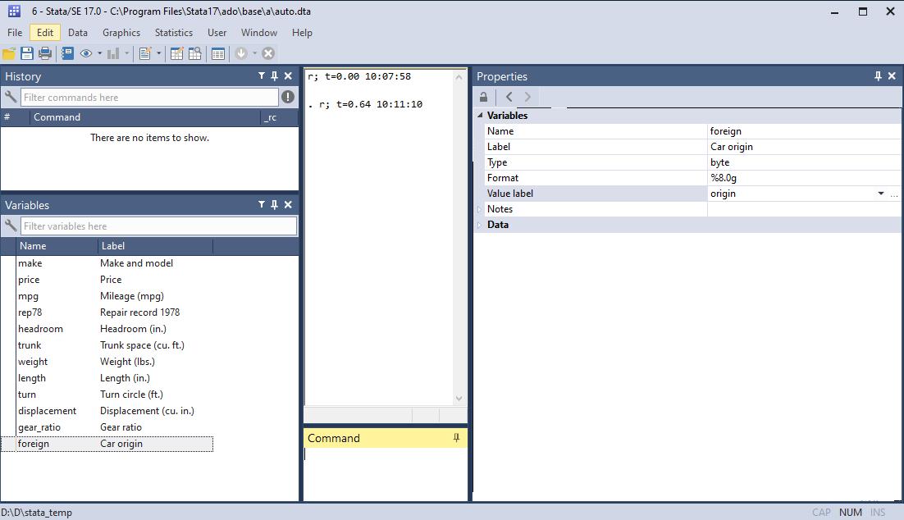

generate - replace - egen [+ exemples de fonctions associées)
Variables de comptage
_n et _N
Sélection et recodage
inlist - inrange - recode
labels
label variable - label define - label value - label list - label drop - xaxis
En gras, commandes externes
Pour accéder aux infomations sur les variables d’une base:
Utiliser le variables manager ou la fenêtre d’information variables properties si elle est ancrée à l’interface. Ces deux outils permettent de faire des modifications et de récupérer la ligne de commande dans la fenêtre command. Le verrou de la fenêtre variables properties doit-être retiré .
Utiliser la commande describe [des] ou la commande ds pour un usage plus avancé (sélection de variables selon leur type par exemple).
Fenêtre properties à droite de l’interface principale (mode dévérouillé) 
Commande describe
sysuse auto, cleardescribe
(1978 automobile data)
Contains data from C:\PROGRA~1\Stata17\ado\base/a/auto.dta
Observations: 74 1978 automobile data
Variables: 12 13 Apr 2020 17:45
(_dta has notes)
-------------------------------------------------------------------------------
Variable Storage Display Value
name type format label Variable label
-------------------------------------------------------------------------------
make str18 %-18s Make and model
price int %8.0gc Price
mpg int %8.0g Mileage (mpg)
rep78 int %8.0g Repair record 1978
headroom float %6.1f Headroom (in.)
trunk int %8.0g Trunk space (cu. ft.)
weight int %8.0gc Weight (lbs.)
length int %8.0g Length (in.)
turn int %8.0g Turn circle (ft.)
displacement int %8.0g Displacement (cu. in.)
gear_ratio float %6.2f Gear ratio
foreign byte %8.0g origin Car origin
-------------------------------------------------------------------------------
Sorted by: foreign
1Types et format
1.1 Types
Stata gère tous les types de variables: numérique, caractère, date. Un type de variable est un type de stockage.
Types numériques: float, long, double, int et byte.
Types caractère: str# et strL (très grandes chaînes de caractères). # est la longueur de la chaîne de caractère, elle ne peut pas excéder 2046 pour le type str.
Plus d’informations: help data types
Modification du type de variable
Optimisation du poids en mémoire avec compress
Commande recast
Optimisation du poids de la base
compress
variable mpg was int now byte
variable rep78 was int now byte
variable trunk was int now byte
variable turn was int now byte
variable make was str18 now str17
(370 bytes saved)
Passage de la variable make en str3
En réduisant le type, on va tronquer les chaînes de caractères qui ne garderont que les 3 premières lettres, à manupiler avec prudence donc. Pour cette opération, Stata impose une confirmation avec l’option force.
Variable d’origine
des make list make in 1/10
Variable Storage Display Value
name type format label Variable label
-------------------------------------------------------------------------------
make str18 %-18s Make and model
+---------------+
| make |
|---------------|
1. | AMC Concord |
2. | AMC Pacer |
3. | AMC Spirit |
4. | Buick Century |
5. | Buick Electra |
|---------------|
6. | Buick LeSabre |
7. | Buick Opel |
8. | Buick Regal |
9. | Buick Riviera |
10. | Buick Skylark |
+---------------+
Modification du type
recast str3 make, forcedes makelist make in 1/10
make: 74 values changed
Variable Storage Display Value
name type format label Variable label
-------------------------------------------------------------------------------
make str3 %-9s Make and model
+------+
| make |
|------|
1. | AMC |
2. | AMC |
3. | AMC |
4. | Bui |
5. | Bui |
|------|
6. | Bui |
7. | Bui |
8. | Bui |
9. | Bui |
10. | Bui |
+------+
1.2 Format
Il s’agit du format d’affichage des valeurs des variables. Ils peuvent être modifiés sans que le type soit changé (décimales, alignement….).
Variables numérique:
- format g: général (définition un peu obsure pour moi) - format f: fixe - plusieurs format d’affichage pour les variables de type dates: %td (date avec jour-mois-année), %tm (mois), %tq (trimestre), %tw (semaine). Les dates et leur manipulation sont un domaines très riche, et feront l’objet d’une courte présentation en fin de chapite.
On peut changer le format d’affichage avec la commande format. Si le format est de type général (g), il est préférable de passer à un format de type fixe (f) On peut un même format à une liste de variables.
Syntaxe
format %formatvarlist
Exemple: changement du nombre de décimales
Dans la base auto, la variable gear_ratio est de format fixe à 2 décimales (%6.2f). Pour supprimer, à l’affichage, les deux décimales: afficher les valeurs sans décimales.
Exemple: aligner le nombre décimal reporté avec summarize sur le format de la variable
Avec l’option format appliquée à la commande summarize on peut automatiquement réduire le nombre de décimales reportées dans l’output
sum gear_ratiosum gear_ratio, d
Variable | Obs Mean Std. dev. Min Max
-------------+---------------------------------------------------------
gear_ratio | 74 3.014865 .4562871 2.19 3.89
Gear ratio
-------------------------------------------------------------
Percentiles Smallest
1% 2.19 2.19
5% 2.28 2.24
10% 2.43 2.26 Obs 74
25% 2.73 2.28 Sum of wgt. 74
50% 2.955 Mean 3.014865
Largest Std. dev. .4562871
75% 3.37 3.78
90% 3.72 3.78 Variance .2081979
95% 3.78 3.81 Skewness .2191658
99% 3.89 3.89 Kurtosis 2.101812
Avec l’option format
sum gear_ratio, formatsum gear_ratio, dformat
Variable | Obs Mean Std. dev. Min Max
-------------+---------------------------------------------------------
gear_ratio | 74 3.01 0.46 2.19 3.89
Gear ratio
-------------------------------------------------------------
Percentiles Smallest
1% 2.19 2.19
5% 2.28 2.24
10% 2.43 2.26 Obs 74
25% 2.73 2.28 Sum of wgt. 74
50% 2.96 Mean 3.01
Largest Std. dev. 0.46
75% 3.37 3.78
90% 3.72 3.78 Variance 0.21
95% 3.78 3.81 Skewness 0.22
99% 3.89 3.89 Kurtosis 2.10
1.3 Modification du type
Il est possible de basculer d’un type caractère à un type numérique et inversement
De numérique à caractère
Si la variable numérique n’a pas de label affecté sur les modalités, ou qu’on ne veut pas conserver l’information données par les labels, on peut utiliser la commande tostring. On peut créer une nouvelle variable avec l’option gen() ou remplacer la variable numérique d’origine avec l’option replace. Une des deux options doit être nécessairement renseignée.
Variable Storage Display Value
name type format label Variable label
-------------------------------------------------------------------------------
foreign byte %8.0g origin Car origin
foreign_str str8 %9s Car origin
Car origin | Freq. Percent Cum.
------------+-----------------------------------
Domestic | 52 70.27 70.27
Foreign | 22 29.73 100.00
------------+-----------------------------------
Total | 74 100.00
De caractère à numérique
Si la variable caractère est a une forme numerique (une suite de nombre comme des années, des âges…), on utilise la commande destring. Lorsqu’il y a des des valeurs manquantes à la variable, on doit uiliser l’option force.
Exemple avec la variable rep78 qui est transformé dans un premier temps en variables caractère avec tostring puis de nouveau transformé en format numérique avec destring
rep78 was int now str1
Variable Storage Display Value
name type format label Variable label
-------------------------------------------------------------------------------
rep78 str1 %9s Repair record 1978
rep78: all characters numeric; replaced as byte
(5 missing values generated)
Variable Storage Display Value
name type format label Variable label
-------------------------------------------------------------------------------
rep78 byte %10.0g Repair record 1978
Si la variable caractère n’est pas de forme numérique et que l’on souhaite récupérer les labels sur les modalités, on peut utiliser la commande encode ou la commande externe sencode (net install st0043_2, force). La seconde permet de remplacer directement la variable d’origine, option particulièrement pratique.. Egalement, cette commande permet plus de souplesse sur le codage de la variable (help sencode pour plus de détail).
Avec encode ou sencode sans l’option gsort, le numéro de la modalité suivra l’ordre alphabétique des chaînes de caractère de la variable: si la variable caractère à pour valeur (“Homme”, “Femme”), “femme” sera automatiquement codée 1 et “homme” 2.
variable foreign_str not found
r(111);
end of do-file
r(111);
Type de variable pour les modèles
Les variables de type caractères ne sont pas acceptées, Stata renvoie alors un message d’erreur avec no observation. Si c’est le cas, les commandes destring et encode vont s’avérer particulièrement utiles.
2Création d’une variable
2.1 generate - replace
La création d’une nouvelle variable se fait avec la commande generate généralement tronquée jusqu’à gen.
Syntaxe
gen nom_variable=valeur/fonction [expression: ifininlistinrange...]
Pour remplacer la valeur d’une valeur variable existante on utilise la commande replace. Le nom n’est malheureusement pas tronquable.
Pour utiliser une fonction mathématique (log, exp, .) => help math_functions
Pour afficher la liste complète des fonctions (variables caractères, statistiques, pseudo nombre aléatoire, dates.): help function
Rappel: attention entre l’opérateur d’affectation (=) et l’expression conditionnelle (==).
Création d’une indicatrice (0,1)
On peut rapidement générer des indicatrices (0,1) à partir d’une expression conditionnelle:
Syntaxe
gen x= expression_conditionnelle
Exemple avec la variable rep78. On génère la variable rep2 qui prend la valeur 1 si rep78>3, 0 sinon. Comme il y a des valeurs manquantes dans la variable d’origine, on corrige l’information pour l’indicatrice dont les valeurs manquantes ont été automatiquement affectées à la valeur 0.
gen rep2 = rep78>3replace rep2 = . if rep78==.tab rep78 rep2
Remarque: Avec la commande tabulate on peut créer une série d’indicatrices à partir d’une variable catégorielle avec l’option gen(nom_variable)
Syntaxe
tab x, gen(nom_variable)
Exemple avec la variable foreign. Avec tabulate on va générer deux indicatrices: origine1 si foreign=0, et origine2 si foreign=1. Un label à la variable est automatiquement créé indiquant la valeur de la variable d’origine.
Car origin | Freq. Percent Cum.
------------+-----------------------------------
Domestic | 52 70.27 70.27
Foreign | 22 29.73 100.00
------------+-----------------------------------
Total | 74 100.00
Variable Storage Display Value
name type format label Variable label
-------------------------------------------------------------------------------
origine1 byte %8.0g foreign==Domestic
origine2 byte %8.0g foreign==Foreign
foreign==D | Car origin
omestic | Domestic Foreign | Total
-----------+----------------------+----------
0 | 0 22 | 22
1 | 52 0 | 52
-----------+----------------------+----------
Total | 52 22 | 74
foreign==F | Car origin
oreign | Domestic Foreign | Total
-----------+----------------------+----------
0 | 52 0 | 52
1 | 0 22 | 22
-----------+----------------------+----------
Total | 52 22 | 74
2.2 egen
egen: extented generate egenmore: package programmé par NJ.Cox qui ajoute des fonctions associée à egen [ssc install egenmore]
Réservé à l’utilisation de fonctions. Pour obtenir la liste help egen.
Exemple: on va créer dans un premier la variable mprice qui reporte pour chaque observation la moyenne de la variable price. Dans un second temps, on va créer la variable mprice_or, mais avec le prix moyen des voitures selon leur origine (foreign). La fonction utilisée est la fonction mean().
egen mprice = mean(price)list make price mprice in 1/10
Sans aucune explication, la fonction sum() qui permet d’obtenir une somme incrémentale n’est pas associée à egen mais à generate. En revanche la fonction total() est associée à egen. Il faut le retenir.
Exemple: on veut créer un identifiant numérique (variable id) pour chaque voiture (dans la base on a une seule voiture par nom de voiture).
gen x = 1 gen id = sum(x)list id make in 1/5list id make in 66/70
| id make |
|--------------------|
1. | 1 AMC Concord |
2. | 2 AMC Pacer |
3. | 3 AMC Spirit |
4. | 4 Buick Century |
5. | 5 Buick Electra |
+--------------------+
+---------------------+
| id make |
|---------------------|
66. | 66 Subaru |
67. | 67 Toyota Celica |
68. | 68 Toyota Corolla |
69. | 69 Toyota Corona |
70. | 70 VW Dasher |
+---------------------+
Si on veut reporter le nombre total d’observations dans la base (variable N), avec la fonction total:
egenN = total(x)list id N make in 1/5list id N make in 66/70
x not found
r(111);
end of do-file
r(111);
On va le voir, ces deux variables qui ont été générées peuvent l’être directement avec les variables internes dites de comptage.
Package gegen (M.Caceres)
Pour les volumétries dépassant le million d’observation il est fortement conseillé d’utilisée les commandes associées au package de Mauricio Caceres, ici la commande gege,.
inlist
Pour sélectionner plusieurs modalités d’une variable dans une expression conditionnelle inlist(variable, valeur1, valeur2,..).
Utile si la variable n’est pas de type ordinale.
Exemple: gen Y=1 if inlist(X,1,3,6,10)
L’expression est hélas toujours limitée à 10 valeurs pour les variables caractères.
inrange
Pour sélectionner un intervalle dans une expression inrange(variable, valeur1,valeur2) avec \(valeur1<valeur2\).
Exemple: gen Y= inrange(X,5,10) pour obtenir \(Y=1\) si \(50\leq x\leq 10\) 0 sinon.
recode
Permet de changer les valeurs d’une variable numérique:
Application: recoder la variable foreign 0=>1 et 1=>2.
5Les labels
La création et la modification peut se faire directement via la boite de dialogue du variable manager.
Label des variables
Syntaxe
label nom_variable "label"
On peut modifier/écraser un label existant
Exemple
des foreignlabelvariable foreign "Origine de la voiture"des foreign
Variable Storage Display Value
name type format label Variable label
-------------------------------------------------------------------------------
foreign byte %8.0g origin Car origin
Variable Storage Display Value
name type format label Variable label
-------------------------------------------------------------------------------
foreign byte %8.0g origin Origine de la voiture
Label sur les modalités des variables
Deux étapes: la création des label et leurs affectation à une ou plusieurs variables. Création du label: label define
Exercice: créer une variable indicatrice qui regroupe de la varble rep78: 0 si rep78<4 et 1 si rep78>3. Affecter un label à la variable (au choix) et des labels aux modalités (au choix).
Show the code
gen rep78b = rep78<4replace rep78b=. if rep78==.labeldefine rep78b 0 "1-3 réparations" 1 "Plus de 3 réparations", modifylabelvalue rep78b rep78bdes rep78btab rep78 rep78b
(5 real changes made, 5 to missing)
Variable Storage Display Value
name type format label Variable label
-------------------------------------------------------------------------------
rep78b float %22.0g rep78b
Repair |
record | rep78b
1978 | 1-3 répar Plus de 3 | Total
-----------+----------------------+----------
1 | 0 2 | 2
2 | 0 8 | 8
3 | 0 30 | 30
4 | 18 0 | 18
5 | 11 0 | 11
-----------+----------------------+----------
Total | 29 40 | 69
Fichiers de labels et multilangue
label save
On peut générer un fichier (.do) donnant le programme qui génère les labels (existants) d’une base: commande label save (par le menu: data => data utilities => label utilities => save labels as do file).
multilangue
Pour des enquêtes internationales, on peut de créer des labels en plusieurs langues switcher d’une langue à l’autre (exemple MAFE l’Ined). La commande doit être installée, elle est externe à Stata (ssc install mlanguage - auteur Jeroen Weesie).
5.1 TODO
Faire un rapide topo sur les variables de type dates
{kind=link}
{kind=link}